The Crucifixion Foretold
Ten centuries before the cross, a psalm said a dying man's clothes would be divided.


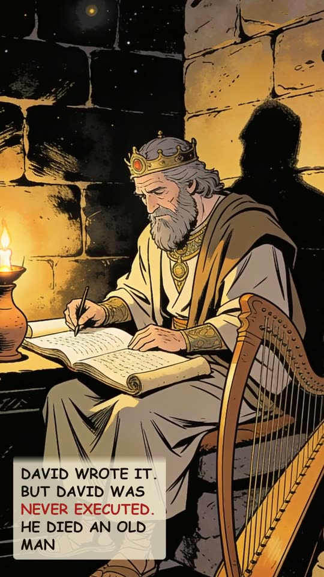
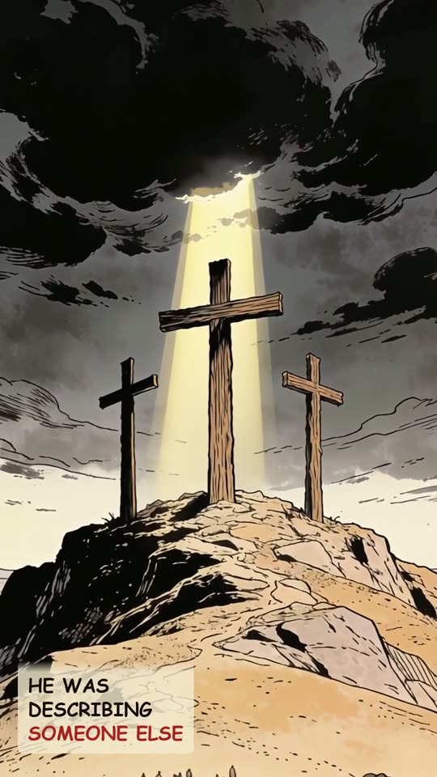
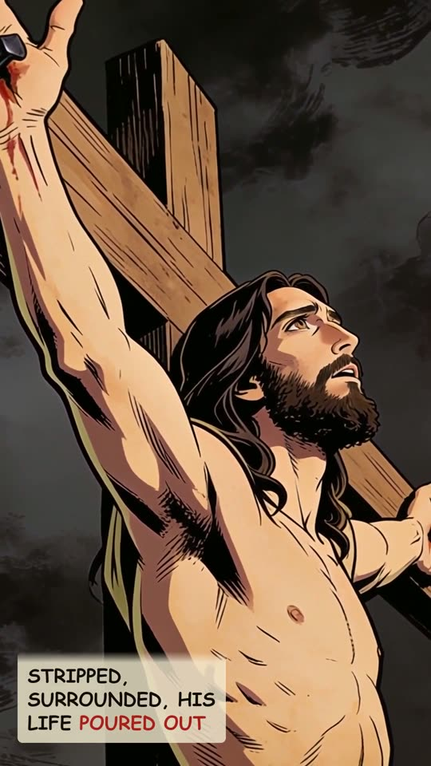
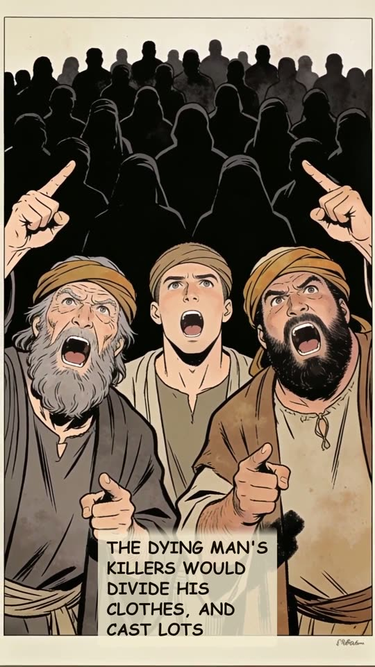
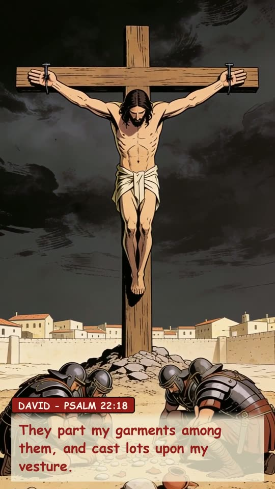
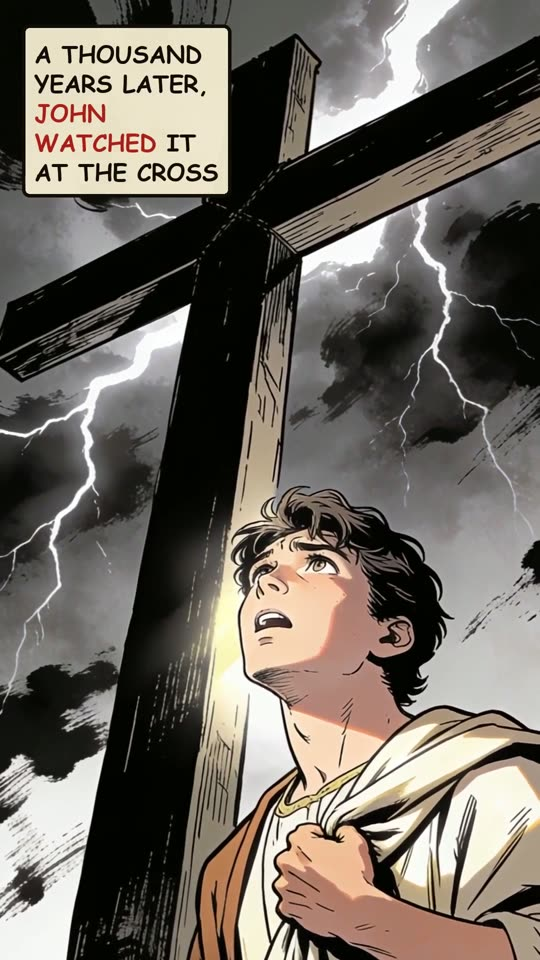
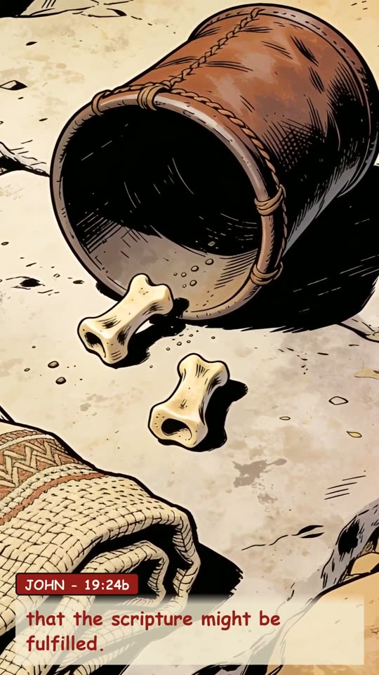
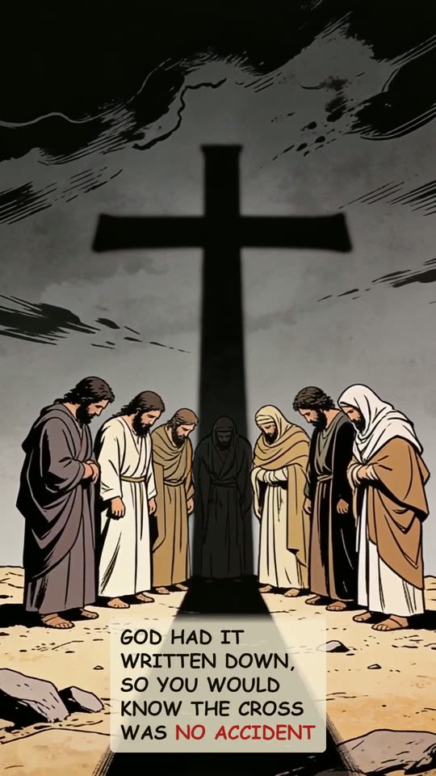
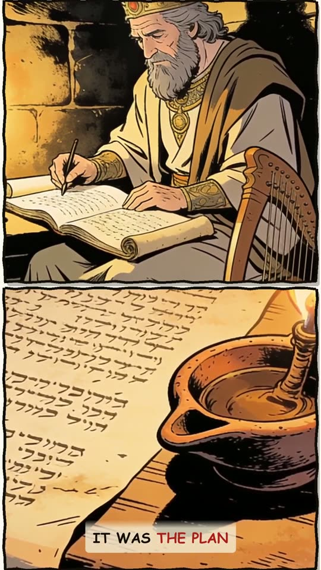
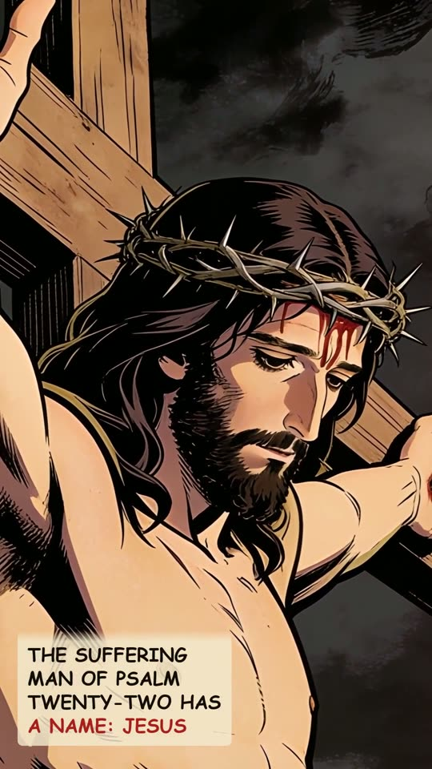
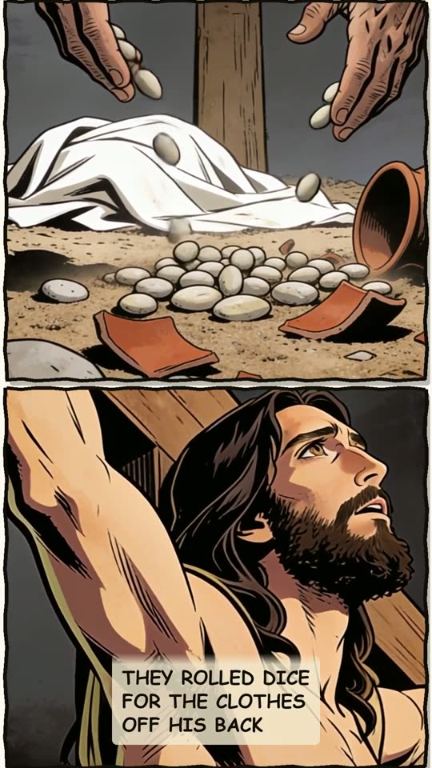
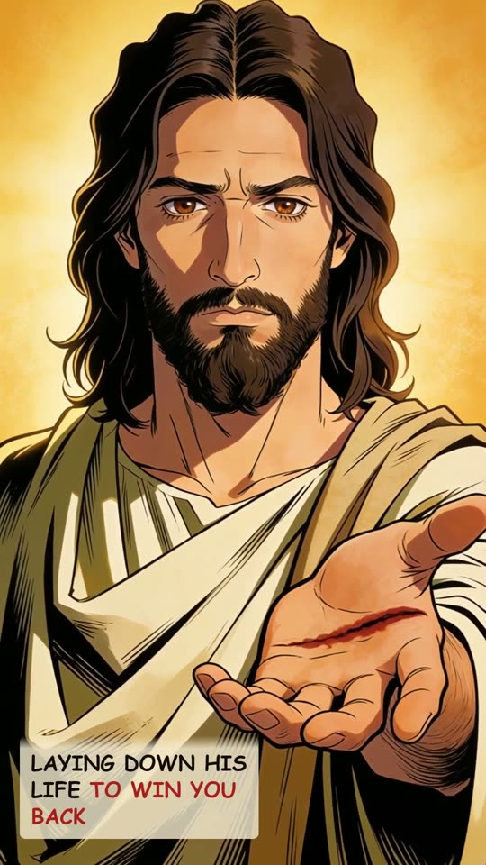
The narration
Ten centuries before the cross, a song recorded exactly how a dying man's clothes would be divided up. Psalm twenty-two. David wrote it in the first person, but David himself was never executed; he died an old man. He was describing someone else: stripped, surrounded, his life poured out. Watch one line, he wrote that the dying man's killers would divide his clothes, and cast lots for them: "They part my garments among them, and cast lots upon my vesture." A thousand years later, John watched it at the cross, soldiers dividing Jesus' clothes, then casting lots for the seamless coat, "that the scripture might be fulfilled". A thousand years early, God had it written down, so when it happened, you'd know the cross was no accident. It was the plan. The suffering man of Psalm twenty-two has a name: Jesus. They rolled dice for the clothes off His back, never seeing what He was really doing, laying down His life to win you back.